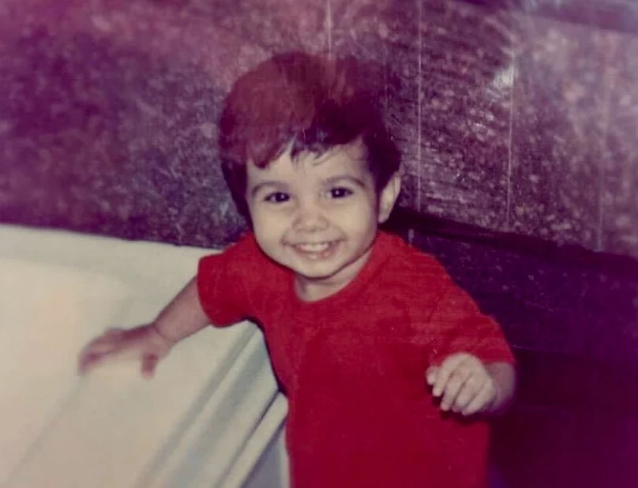

Allow me to reintroduce myself.
NAMASTE, I'M ANUBHUTI
I grew up on the southern banks of the Ganga, where stories live in street markets, monsoon worn posters and hand painted shop signs. Those were my first lessons in design, long before I had a word for it.
Today I start with research and end with a story, so the solution stays with people. Off screen, I'm out with a camera, trying a new art technique, or planning the next trip.
WHERE I'VE BEEN
Internships, research and a semester abroad, newest first.
-
Jul 2026 to now
UX Design Intern, Tata Motors
Redesigning the DPDS team's internal ticketing system into a conversational assistant, building its design system, and designing Agile Wheels, an internal developer platform.
-
Feb to May 2026
Exchange semester, ESAD Orléans, France
Digital Arts and Design: internet art, 3D in Blender and gamified websites. Researched and designed Designing the Return, mentored by engineers at Valeo and Renault.
-
Jun to Sep 2025
UX Design Intern, MBITS Innovations
Rebuilt the information architecture of WelNest, an AI wellness app, and designed its core flows, from onboarding to personalised dashboards.
-
Jun to Jul 2025
Academic Research Intern, Brahmanda Educational Foundation
Interviewed 20+ drivers aged 18 to 68 about infotainment and voice assistants, and turned it into journey maps and early concepts.
-
May to Jun 2025
UX Design Intern, Toniztoz
Designed flows and wireframes for Affecio, a video based dating app for Gen Z, working closely with the developers.
-
2023 to now
B.Des in UX Design, MIT Institute of Design, Pune
Where it all started. Also first author of Curating Finstas, a study of private Instagram spaces that reached the final round at India HCI 2025.
SKILLS AND TOOLS
A project of mine, in four frames.
-
01 Listen
Start with people, not screens.
- User Interviews
- Contextual Inquiry
- Surveys
- Competitive Analysis
-
02 Make sense
Find the one problem worth solving.
- Thematic Analysis
- Journey Mapping
- Personas
- Information Architecture
- Heuristic Evaluation
- Enterprise Architecture
-
03 Make
Sketch, then flows, then screens.
- Wireframing
- User Flows
- Interaction Design
- High Fidelity Prototyping
- Design Systems
- Visual and Graphic Design
- Branding
- Responsive Web Design
-
04 Test and tell
Check it with people, then tell its story.
- Usability Testing
- A/B Testing
- Accessibility
And on my desk
Design
- Figma
- Framer
- Photoshop
- Illustrator
- After Effects
- Blender
- Adobe XD
Code
- Claude Code
- VS Code
- Antigravity
- Android Studio
- Xcode
- HTML
- CSS
- JavaScript
- Python (basic)
AI
- AI Assisted Design Workflows
- Generative Prototyping
- Conversational UI
- Agentic AI Interfaces
Team
- Notion
- Jira
- Slack
And I can say hello in
- नमस्तेHindi, native
- HelloEnglish, fluent
- BonjourFrench, beginner
- HalloGerman, beginner
For me, design has always been about translation. Turning lived experiences into visuals, strategies and interactions that help people feel seen and understood.